사진을 참고한 모델 가설과 실물 사진의 정확한 재현을 구분한다. 약지 받침·엄지 보정의 모델 유지가 통과했으며, 전체 초기 배치→회전→유지→다음 회전→유지의 실물 준비는 아직 완료하지 않았다.
중지의 임시 하중은 모델 피드백 한 조건에서 확보했다. 중지를 고정하면 약지 재배치 뒤 중지 하중을 잃었고, 동시 피드백 두 조건은 중지·엄지 끝 주변 충돌 프록시(cadtip_mf_th)의 미세 겹침 기준으로 중단됐다. 다음90도와 처음 배치부터의 전체 연결은 아직 통과하지 않았다. 이 미세 모델 겹침은 실물 위험 충돌의 측정값이 아니다.
다음 회전 중간에서 약지–손바닥 여유 확보 → 약지·엄지 압박 줄이기 → 양쪽 손바닥 여유 확보와 ID14 지령3도 후퇴를 연결했다. 관절·충돌 기준을 바꾸지 않았다. 마지막 탐색의 초기값 계산 오류는 같은 경계 안쪽의 초기값을 쓰도록 고쳤다.
426목표를 독립 재생했고 네 구간의 전체 상태 차이가0, 전체 31950개1ms 상태에서 손 지지가 유지됐다. ID14의 실제 모델 상한 여유는 3.789도다. 양쪽 여유 확보3조건이 모두 중간 지지 검사를 통과했으며 선택한 조건의 큐브 변화는 1.556mm·3.368도였다.
마지막3.37도 변화는 회전 도중의 변화다. 최종 파지 유지의3도 기준 통과로 세지 않았으며4050상태의 최종 윗단 공간도 이 중간 경로에서 인증하지 않았다. 이 경로 역시 별도로 배치한 약지·엄지 파지에서 출발하므로 첫 회전과의 전체 연결을 뜻하지 않는다.
426목표 독립 재생 · 양쪽 여유·후퇴3조건 · 압박 해제 성공·실패 보존같은 관절 제한 안에서 ID14 지령을8도 더 후퇴시키는 세 중간 경로가 손 지지를 유지했다. 선택한77목표까지 합친 503목표를 독립 재생했고 다섯 구간의 전체 상태 차이가0, 전체 손 지지100%, 실제 ID14 상한 여유 11.991도를 확인했다. 실물 부하·최종 작업 파지·완료한 다음90도 인증은 아니다. 후속 회전은 이 재파지 위치를 검사 전에 고정한 별도 모델 조건이다. 이전 위치 복귀 실패를 통과로 바꾸지 않는다.
503목표 재생 · 추가 재파지3조건사용자가 약지는 흰색 앞면을 받친다고 확인했다. 모델 그림에서는 앞면을 로컬+X로 표시했다. 사진–카메라–손 좌표를 정밀 등록한 결과는 아니며 중지·엄지의 실제 각도도 아직 확정하지 않았다.
기록된 약지 네 값은 그대로 보존했다. 정확한 네 값의 정적 기하 비교와 원래 구동 범위 안의 동역학 비교를 분리했다. 동역학 비교의 ID14 참고각은 기록보다10.877도 작다. 원래 상한을 바꾸지 않고 닫기 여유를 남긴 별도 모델 가설이며, 사진 자세와 같은 목표라고 부르지 않는다.
사용자 사진·각도 출처노랑 약지 · 빨강 엄지 · 초록 중지 · 파랑 검지. 큐브의 흰 앞면·빨간 윗면은 사용자의 면 설명에 맞춘 표시다. 카메라 시점을 사진에 정합한 것은 아니다. 분홍 원통은 윗단 회전 영역 표시다.
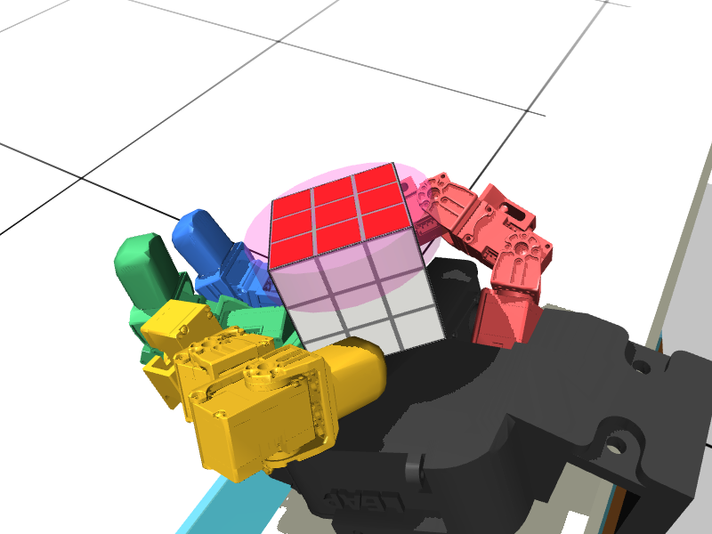
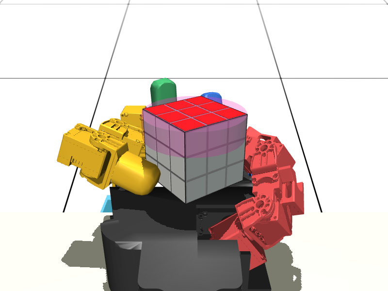
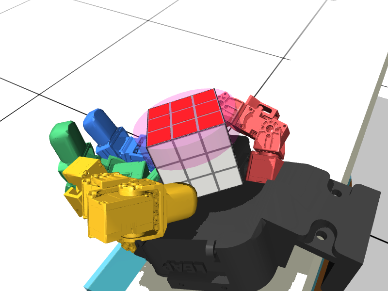
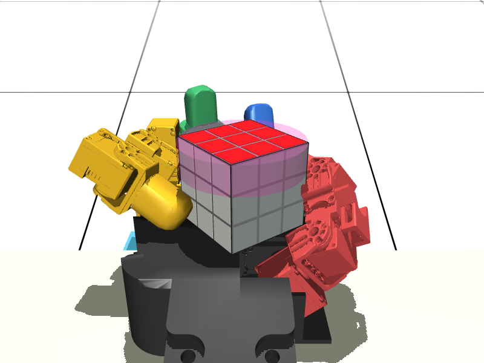
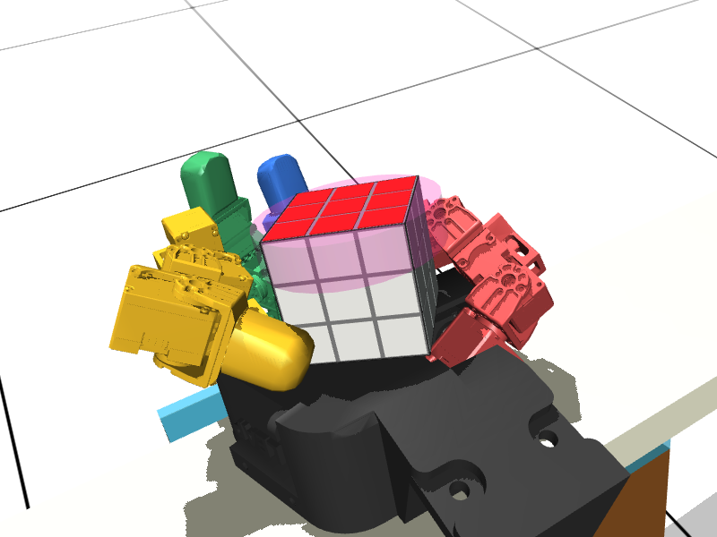
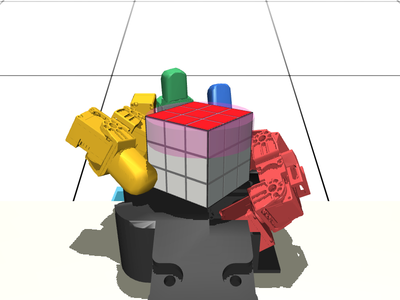
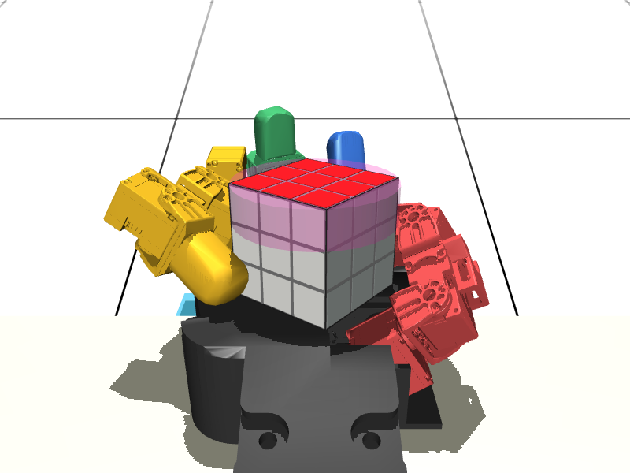
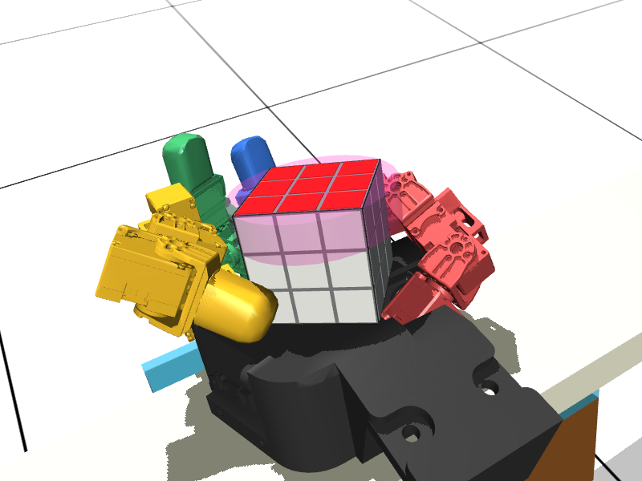
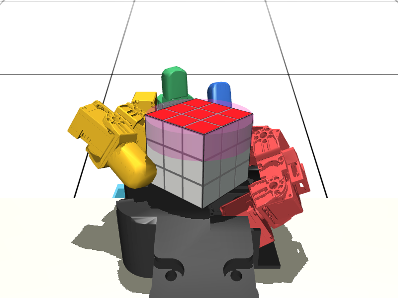
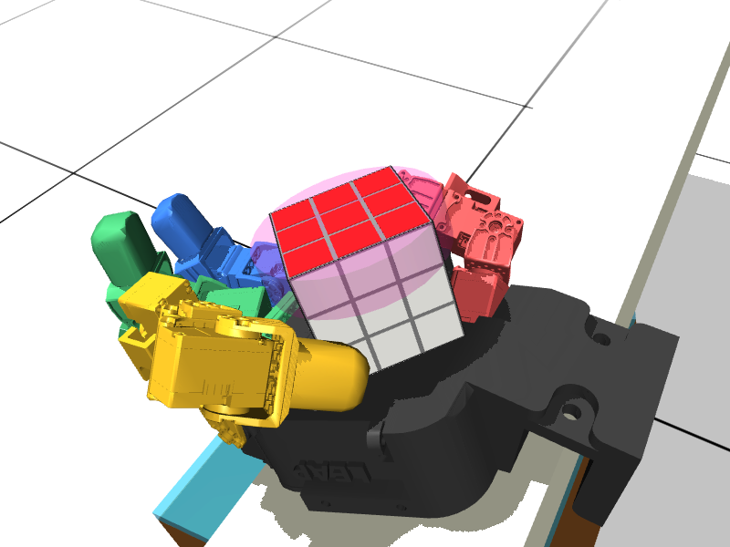
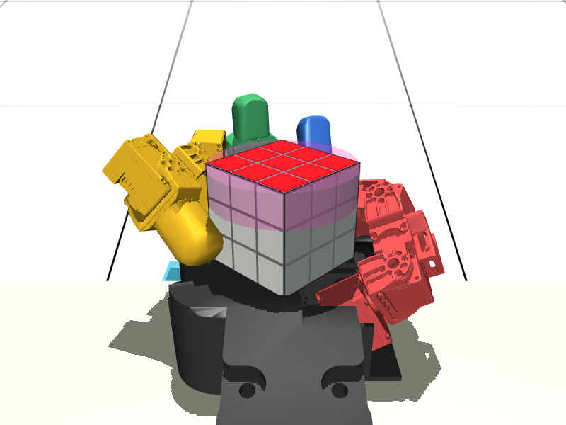
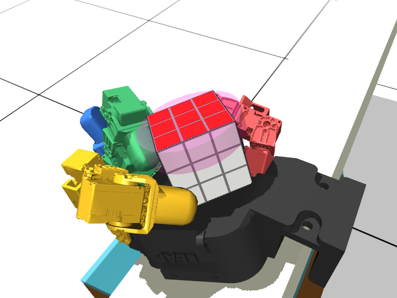
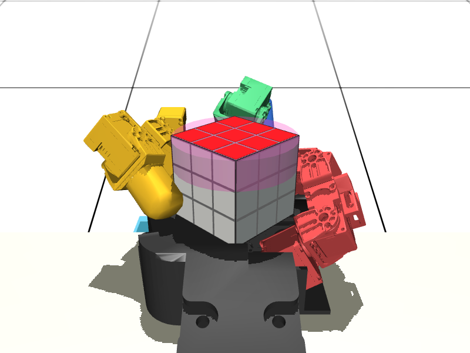
기하 후보를 별도로 배치한 뒤 자유 동역학에서 큐브가 손바닥 쪽으로 9.111mm 이동했다. 처음 배치 위치2mm 기준 미달은 보존했다. 정착한 실제 모델 끝 상태를 다음 검사의 출발 위치로 고정했다. 초기 배치에서 이 파지까지 들어온 경로가 검증된 것은 아니다.
다른12관절의 지령을 bit 단위로 유지하고 엄지만 닫았다. 모든 관절과 큐브의 동역학은 자유롭게 계산했다. 힘은 모델 가정과 계산값이며450mA의 환산값이 아니다.
| 추가 닫기 가정N | 약지/엄지 법선력N | 큐브 변화 | 윗단 인증1ms 표본 | 하중·공간 유지 |
|---|---|---|---|---|
| 0 | 1.075 / 1.073 | 0.006mm / 0.002도 | 4050 | 통과 |
| 0.4 | 1.391 / 1.391 | 0.324mm / 0.279도 | 4050 | 통과 |
| 0.8 | 1.654 / 1.655 | 0.595mm / 0.573도 | 4050 | 통과 |
별도 모델 배치의 정착과 엄지 추가 닫기100목표를 이어 재생했고 두 구간의 전체 상태 차이가0이었다. 마지막4050상태의 약지·엄지 하중과 전체 손 지지, 윗단 인증이 모두 통과했다. 별도 배치에서의 첫 지령 설정은 명시한 초기화이며 실물 도달 경로가 아니다.
재생 근거11조건 중 11조건을 통과했다. 가정 마찰0.25/0.30/0.35의 무하중 및 양방향0.0005/0.001/0.003/0.01N·m 일정 모멘트다. 매 조건에서 약지·엄지0.1N 초과와4050상태 지지·공간을 검사했다. 실제 왼손 하중이나 일반적인 실물 허용력을 측정한 것이 아니다.
가정 하중 원본원본108차원 actor를 새 정착 파지에서 두 입력 이력 방식으로 시험했다. 71목표, 69목표에서 손 접촉 기준으로 중단됐고 다음90도를 검증하지 못했다. 별도110차원 SAC 보정 정책과 구분한다. 이번에 새 SAC 학습이나 증류는 실행하지 않았다.
정책 재사용 원본완료된 검사: 392목표,180도 목표 오차 74.040도, 출발 파지 위치와 14.155mm 차이. 완료한 회전·유지로 인증하지 않는다.
모델 기록완료된 검사: 280목표,180도 목표 오차 74.027도, 출발 파지 위치와 14.103mm 차이. 완료한 회전·유지로 인증하지 않는다.
모델 기록완료된 검사: 288목표,180도 목표 오차 71.145도, 출발 파지 위치와 21.979mm 차이. 완료한 회전·유지로 인증하지 않는다.
모델 기록완료된 검사: 240목표,180도 목표 오차 70.608도, 출발 파지 위치와 20.865mm 차이. 완료한 회전·유지로 인증하지 않는다.
모델 기록완료된 검사: 320목표,180도 목표 오차 74.847도, 출발 파지 위치와 12.935mm 차이. 완료한 회전·유지로 인증하지 않는다.
모델 기록완료된 검사: 264목표,180도 목표 오차 74.280도, 출발 파지 위치와 3.500mm 차이. 완료한 회전·유지로 인증하지 않는다.
모델 기록정적 기하 후보 3/3개. 자유 큐브 도달 6조건 중 임시 중지·약지·엄지4050상태 유지 0조건 통과. 약지·엄지 지령은 고정하고 중지만 움직였다. 정적 접촉 후보와 실제 동역학 도달은 구분하며, 임시 지지 검사는 최종 윗단 공간·다음90도 인증이 아니다. 회전 중간 소스의 중단은 약지 끝–손바닥의 미세 모델 겹침 기준이며 실제 위험한 충돌을 측정했다는 뜻이 아니다.
정적 접촉 원본 · 자유 큐브 도달 원본정적 기하 후보 3/3개. 자유 큐브 도달 6조건 중 임시 중지·약지·엄지4050상태 유지 0조건 통과. 약지·엄지 지령은 고정하고 중지만 움직였다. 정적 접촉 후보와 실제 동역학 도달은 구분하며, 임시 지지 검사는 최종 윗단 공간·다음90도 인증이 아니다. 회전 중간 소스의 중단은 약지 끝–손바닥의 미세 모델 겹침 기준이며 실제 위험한 충돌을 측정했다는 뜻이 아니다.
정적 접촉 원본 · 자유 큐브 도달 원본2조건 중 임시 세 손가락 유지 0조건 통과. 정확한 모델 거리·접촉 법선·힘을 가정하고 중지 지령만 보정했다. 새 SAC 학습이나 실제 센서로 구현한 제어가 아니다. 첫 보정의 외부 받침 접촉 중단과 중지 하중 유지 미달은 그대로 보존했다.
피드백 결과와 입력 가정2조건 중 임시 세 손가락 유지 1조건 통과. 정확한 모델 거리·접촉 법선·힘을 가정하고 중지 지령만 보정했다. 새 SAC 학습이나 실제 센서로 구현한 제어가 아니다. 첫 보정의 외부 받침 접촉 중단과 중지 하중 유지 미달은 그대로 보존했다.
피드백 결과와 입력 가정3조건 중 지지 전환 검사 0조건 통과. 중지 지령을 고정한 비교에서는 약지 이동 뒤 중지 하중이 사라져 세 조건이 모두 미달했다. 손바닥을 포함한 손 지지가 유지되는 것과 중지 추가 지지가 유지되는 것을 구분했다.
동시 제어 비교 원본2조건 중 지지 전환 검사 0조건 통과. 약지·엄지 경로에 중지 거리·하중 피드백을 동시에 적용했다. 정확한 모델 신호를 사용하는 별도 동역학 검사이며 실물 제어·다음90도 인증이 아니다.
동시 제어 비교 원본637목표를 초기화 없이 재생해 실제 추가 yaw 90.075도,180도 자세 오차 0.271도, 마지막4050상태 지지·윗단 공간을 확인했다. 출발은 별도로 배치한 중지·엄지 파지이며 출발–목표 작업 위치가 19.505mm 다르다. 사진의 약지 파지 결과와 합쳐 전체 두 회전 성공으로 세지 않는다. 첫3015목표의 끝에서 이 출발 파지로 들어가는 연결도 아직 없다.
조건부637목표 독립 재생